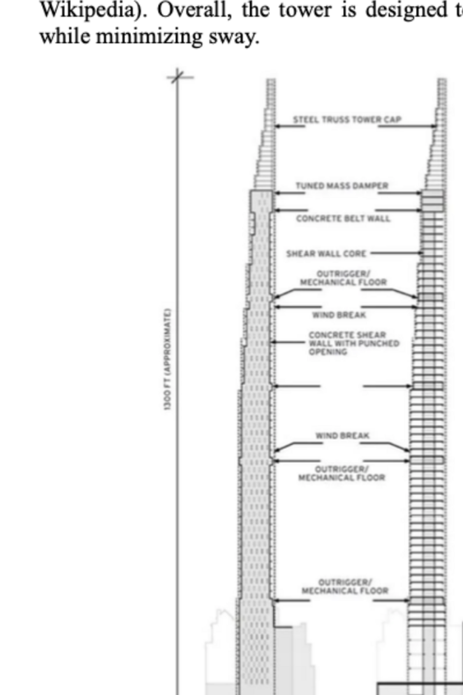
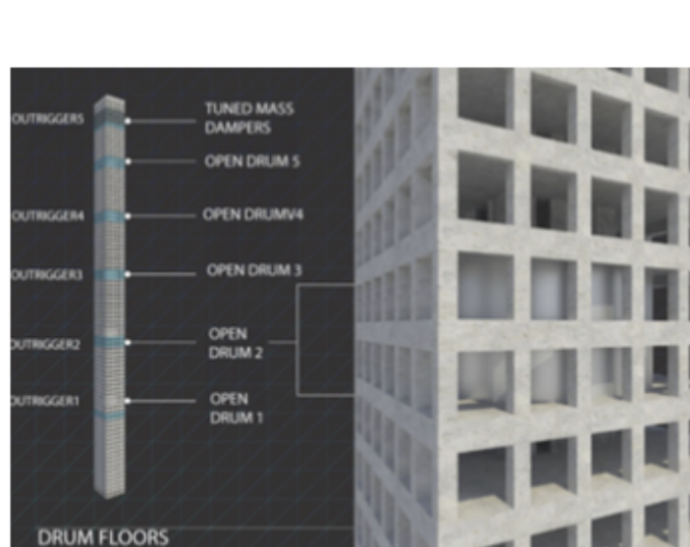

Supertall tower aerodynamics
Why a 1,400-foot building a tenth as wide as it is tall needs a damper the size of a room — worked out analytically on a simplified model of Steinway Tower.

Problem
Manhattan has filled with supertall buildings, between 300 and 599 m, and many of them are also superslim — width-to-height ratios of 1:10 or 1:12, and newer ones thinner still. At those proportions, wind governs the design. A slender tower is a bluff body shedding vortices in an alternating pattern, and if the shedding frequency approaches a natural frequency of the structure, the building is driven into resonance across its whole height. The failure mode is rarely collapse; it is occupants who feel the building move.
Approach
We reduced the tower to a simplified triangular-prism body and worked the loading analytically: a wind velocity profile varying with height, the resulting drag distribution, and the shedding frequency from the Strouhal relation compared against the structure’s natural frequency. The point was to find the mechanism and its order of magnitude, not to resolve the flow.

What came out of it
The analysis explains why the real building looks the way it does. Narrow faces turned into the prevailing wind reduce the projected area in the sensitive direction. Open mechanical floors break up the coherent airflow that organized shedding depends on, which detunes the excitation rather than resisting it. The tuned mass damper at the top adds damping at the frequency that matters. Outriggers and belt walls raise lateral stiffness, moving the natural frequency away from the shedding band.
Taken together these are three different strategies against one problem — change the forcing, change the structure’s response, or dissipate the energy — and a tower this slender needs all three.
Scope, honestly
This is an analytical study, not a CFD one. There is no meshed model and no simulated flow field; the numbers come from hand calculations on a simplified geometry with standard empirical correlations. Treated as what it is, it is a clean exercise in identifying the governing mechanism and estimating it. Treated as CFD, it would be oversold.
What I’d do next
The analysis produces a velocity profile and a deflection estimate at every height, but the report presents them as numbers rather than curves; plotted against height, the argument would land in a glance. The natural extension is a transient CFD case around the prism section, which would return an actual shedding frequency to check the Strouhal estimate against instead of relying on the correlation alone.
- Course
- MECE E3100 Introduction to Mechanics of Fluids
- Team
- 3 people
- Subject
- Steinway Tower, 111 West 57th St
- Method
- Analytical, simplified geometry